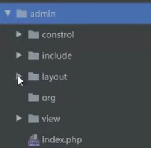
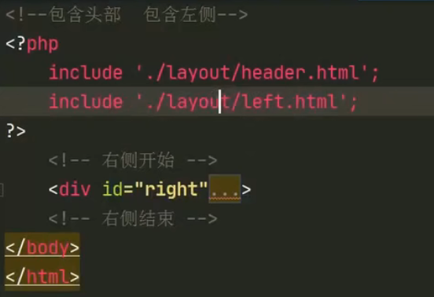
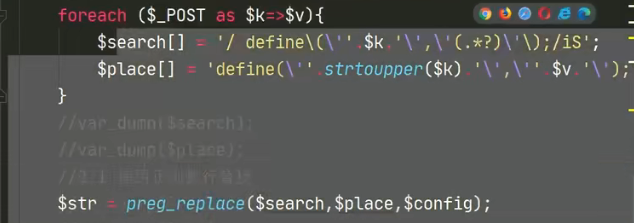
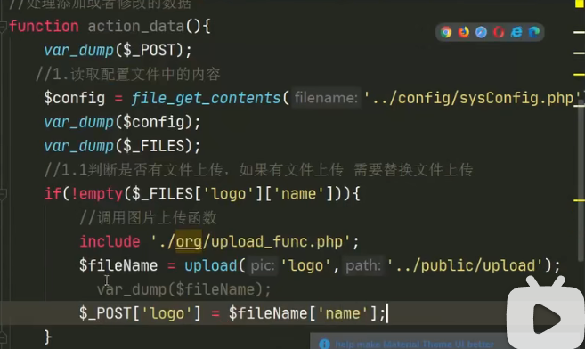

CMS架构和后台配置A-初识
WEB工作原理架构

CMS系统架构
整个流程构架：
1.需求分析
CMS
后台：会员模块、分类模块、文章模块…
前台：首页、列表页、文章列表、搜索、分页、注册、登录页….
2.数据库设计
1.找实体
2.为实体找属性
3.找关系
4.E-R图
3.程序设计
项目的目录结构（MVC设计模式）
一、EW-cms（主目录）
1.admin 网站后台目录（
layout-后台公共模板文件-header.html/left.html；
include-后台资源目录-css/js/img；
view-所有的目录user/type-index.html/index.php-访问后台的入口文件-所有后台函数的调用-所有路径的include的蛊王；；
control控制器目录
IndexControl.php显示后台主页文件-一些函数的具体编写/UserControl.php用户相 关操作/ORG扩展目录
）
2.web（home） 网站前台目录（
index.html 首页
layout 前台工作模板 header/footer
model模块（存放php与mysql相连的增删改查操作的函数封装）
view-每个页面都有单独的文件(index.php前台主入口文件)
control-每个页面相关的操作写入到对应的control文件中）
4.public 公共资源目录（图片上传和缩放/index.php 网站（项目）主入口文件）
5.config 网站的配置（数据库相关的操作、数据库的配置文件、数据的验证、上图中的model-设置网站配置常量）
5.项目测试
6.验收完工 项目正式上线
项目的以上在此下面两本书中会说明清楚：
-
程序设计说明书
一、引言（编写目的、背景、定义、参考资料）
二、外部设计（标识符和状态、使用它的程序、约定、支持软件）
三、结构设计（概念结构设计（实体、属性、E-R图绘制）、逻辑结构设计（E-R图转向关系模型、确定关系模型）物理结构设计（数据表的设计、创建数据表、数据库的设计和其他问题））
-
项目需求分析说明书
一、文档介绍（编写说明、项目背景、适用人员、参考资料、术语的缩写与解释）
二、任务概述（产品描述、系统目标（前后台）、系统功能结构、系统流程图）
三、业务描述（后台登录管理（功能构成、描述、预览）、文章管理、图片管理、栏目管理、用户组管理）
最多
四、系统运行环境（硬件环境、软件环境）
五、需求设计评审
项目目录搭建和后台模板调用
-
目录路径
../include/css/header.css在上级目录下找csscss/header.css在当前目录下找css./include/css/header.css在同级目录下找css -
php基本语法查询A
- 变量以
$开头 - 输出为
echo - 预定义变量
$_开头
- 双问号（??）运算符：称为Null合并运算符。若为null则返回"??“后面的值，否则返回原值
-
问号（？）：传参
<a href="./index.php?m=sys&a=show>网站配置</a>
-
html语法之嵌入css样式
//html中的head里 <link rel=“ ” href="css文件的目录路径">
-
$_GET变量用法
$_POST变量笔记详情见上个大标题下php基本语法查询B中

//welcome.php 文件里 <form action="hello.php"method="get">// form 标签提交表单 ； action表示向什么文件提交（此处也可填提交对象文件的路径并传参赋值）； method表示提交的方法 Name:<input type="text"name="name"> Age:<input type="text"name="age"> <input type="submit"> </form> //当用户点击提交按钮时，发送的 URL 会类似这样：http://www.w3school.com.cn/welcome.php?name=Peter&age=37 //“hello.php” 文件现在可以通过 $_GET 变量来获取表单数据了（请注意，表单域的名称会自动成为 $_GET 数组中的 ID 键） //hello.php 文件里 Welcome <!--?php echo GET["name"];?-->.<br> You are <!--?php echo $_GET["age"];?--years old!
- 变量以
-
php作用概览
-
html和php关系。
php是脚本语言，生成动态html。html收集数据提交给php处理，然后php再把数据返回给html显示
-
JS和php的区别
1、php是一个服务端语言，而JavaScript是一个客户端语言；
2、php的字符串连接符是“.”，而JS的是“+”；
3、数组相加，php用“+”，JS用concat()函数；
4、php只有变量名区分大小写，而JS全部区分大小写。
5、php核心功能通过函数方法实现，而js通过对象实现
-
php和mysql的关系
php是服务器端脚本语言 mysql是服务器端常见的数据库管理程序. 一般用apache+php+mysql一起使用, 可以实现很多常见操作数据库的网页网站应用。php语言支持对mysql数据库中的数据，进行连接，增，册，查，改，和关闭的操作。
-
-
admin（网站后台目录下）文件和模板的调用
-
注意 改动时 若a1文件下有写 include “a2的路径”，且
若a2文件还要再include “文件路径”，则
此文件路径的查找按照a1文件层次级别的位置查找，
此文件路径所指的文件（html）中的css关联的路径也要按a1的文件层次级别查找
include 包含 即 所有的代码都被赋值粘贴过去。
可因此实现html中写php代码（此html文件一定被包含进某一个php文件）
三个header、left、right的html文件的合并（把多余的head和body标签及内容去掉）
-
-
大体文件目录
admin下的文件目录

-
admin下，index.php(后台主入口文件)
–>在此例中明显可见，所有的路径包含都是以index.php的级别标准查找的。
–>浏览器中，admin下，默认打开的文件，实现函数调用
-
可调用时传参进去（此处配置文件的内容编写见下一个大标题）
<a href="./index.php?m=sys&a=show>网站配置</a> //此例中，sys和show都是函数再在control下新建一个“sysControl.php”写sys和show函数，函数里包含新写的sysControl.html文件
在index.php里把“sysControl.php”包含进去，且index.php其他参数不用改，便可实现传参的调用。
-
-
admin下，contrl下，indexcontrol.php文件
–>写所有将被用到的函数和方法的具体“定义”
-
admin下，view下，index.html文件
–>写具体要呈现的内容

-
layout文件夹包含：header.html和left.html文件
后台网站配置功能的实现
-
php基本语法查询B
pass
-
PHP的变量在HTML的
input表情里的value属性里面写时的写法：<?=变量名?> -
数组的写入


- php中退出执行代码为
exit - php中
变量不需要定义，直接写名字直接用就行了–>弱类型语言 - php中字符串的连接与分割
.和'。即'.'的使用 - php中，输出为
echo - php中，变量名以美元符号开头
-
var_dump(x)函数:用于输出变量x的相关信息。x经常是一个预定义的数组变量或者对象。
-
define(name,value,case_insensitive)函数：定义一个常量值，常用在配置文件中。名字、值、对名字的大小写是否敏感（true为不敏感，false反之）
-
html语法之
form标签能让用户输入内容都在form表单范围内。
特别说明属性method。method=“post” 或者 method=“get”两种请求方法
input标签（type和name属性）必须存在于form里textarea(name属性、行和列)标签必须存在于form里，表示多行文本的输入。span用于对文档中的行内元素进行组合。(用于提示、文本样式需要有特殊变化时)td（单元格中）的属性colspan表示可限定单元格所占的列数，即跨列合并此处
form标签包含了table标签包含了tr标签包含了td标签以下为图片文件上传的例子（adimin下view下sysConfig.html中）:
只要有图片上传，就要改变form的编码格式
enctype（sysConfig.html中）：enctype属性指定将数据发回到服务器时浏览器使用的编码类型。
以下为普通文本输入的例子（sysConfig.html中）：
-
$_POST变量（$_GET变量笔记详情见上个大标题下php基本语法查询A中的）
由于变量不显示在 URL 中，所以无法把页面加入书签。

//form.html中 <html> <head> <meta charset="utf-8"> <title>菜鸟教程(runoob.com)</title> </head> <body> <form action="welcome.php" method="post"> 名字: <input type="text" name="fname"> 年龄: <input type="text" name="age"> <input type="submit" value="提交"> </form> </body> </html> //welcome.php中： //"welcome.php" 文件现在可以通过 $_POST 变量来收集表单数据了（请注意，表单域的名称会动成为 $_POST 数组中的键） 欢迎 <?php echo $_POST["fname"]; ?>!<br> 你的年龄是 <?php echo $_POST["age"]; ?> 岁。 //此时，显示收集结果的URL：http://www.runoob.com/welcome.php
-
$_FILES变量在php中，
$_FILES是一个预定义的数组变量，用来获取通过POST方式上传到服务器的文件数据。如果为单个文件上传，那么$_FILES为二维数组；如果为多个文件上传，那么$_FILES为二维数组。
-
file_get_contents(filename:"xxxx")函数作用是将整个文件读入一个字符串。括号里填写所要读取文件的路径。“filename:“可写可不写。
该函数是二进制安全的。（意思是二进制数据（如图像）和字符数据都可以使用此函数写入。）
-
file_put_contents(filename:"xxxx",字符串变量)函数作用是把字符串变量传到filename文件里，传入成功返回1，否则返回0。
-
foreach()数组的历遍函数$b = array('a'=>'Tom','b'=>'Mary','c'=>'Peter','d'=>'Jack'); foreach ($b as $value) { echo $value."<br/>"; } //结果： Tom Mary Peter Jack foreach ($b as $key => $value) { echo $key.','.$value."<br/>"; } //结果： a,Tom b,Mary c,Peter d,Jack
-
-
正则表达式
-
限定符
?例如used?表示 前一个字符d可由可无 匹配结果 use used；
*例如ab*c表示前一个字符b出现次数不定 匹配结果 abbbbc ， abc ， ac；
+例如ab+c表示前一个字符匹配次数1此或者多次 匹配结果 abbbbc ， abc；
{n,m}限定匹配次数表示最少匹配n个，最多匹配m个- 如果要匹配的是一个字符串,用括号括起来：
（ab）+
- 如果要匹配的是一个字符串,用括号括起来：
-
运算符
|或者or运算符，例如a (cat|dog)（注意一定要有括号） 匹配结果：a cat，a dog
-
字符类**(
+符号是因为匹配时加上去的，不属于字符本身)**[abc]+方括号内的字符串表示只要包含这几个字符就匹配[a-zA-Z]+表示匹配所有的大写字符和小写字符[^0-9]+表示除了所有的数字字符其他的都匹配 -
元字符((
+符号是因为匹配时加上去的，不属于字符本身)\d+匹配所有的数字字符\D+与上面小写d相反\w+匹配所有的单词字符（英文、数字、下划线）\W+与上面小写的相反\s+匹配所有的空白字符（tab键和换行符）.*匹配任意字符（除了换行符）^a匹配所有行首的aa$匹配所有行尾的a\b表示单词字符的边界结束了（末尾）
贪婪与懒惰匹配
-
加一个
?让默认的贪婪匹配–>(转为)懒惰匹配 -
实例1（颜色值十六进制的匹配）

-
实例2（ipv4地址的匹配）

-
fore-learning
- 正则表达式30分钟入门教程作者：deerchao https://deerchao.cn/tutorials/regex/regex.htm
- Regex tutorial一A quick cheatsheet by examples（英文）作者：Jonny Fox https://medium.com/factory-mind/regex-tutorial-a-simple-cheatsheet-by-examples-649dc1c3f285
- Regular Expressions Tutorial（英文） https://www.regular-expressions.info/tutorial.html
-
php中用正则表达式
(71条消息) PHP正则表达式_正在过坎的博客-CSDN博客_php正则表达式
实例:要实现接受到的内容实现替换
(要进行转义;变量和字符串之间的分割与拼接用
'.';修饰符写在末尾。
i代表不区分大小写S代表匹配一切字符；我们都使用正斜线
//作为正则表达式的定界符号;
- 关键字（概览）
()表示一个整体
^表示输入字符串的开始位置
$表示输入字符串的结束位置
.通配符，代表任意字符,但不匹配换行
\转义字符
|两项之间的一个选择
- 修饰符
i表示不区分大小写
ss 表示.将匹配一切字符
x表示匹配到空白字符会忽略
A表示匹配规则要从头开始匹配
- 常用函数
Preg_match_all(正则表达式、匹配字符串、匹配到的东西放入数组)
该函数会返回匹配到的次数（可能是0）， 或者如果发生错误返回FALSE
preg_replace(正则表达式、替换成什么、匹配字符串)
该函数会返回替换后的结果

-
后台网站配置文件的内容编写：
目的：
传入保存操作，实现用户输入的东西变为整个网站的名字、logo、关键字等等。即更新（更改）配置文件中的常量。
流程概览：
sysControl.html写实现修改这个操作的前端页面和获取用户输入；sysConto.php写实现修改这个操作的具体代码。（把从sysControl.html中接受到的用户输入的数据进行操作）。
sysConfig.php中写配置的键值对，由于用户输入的这些东西（指文本形式的内容保存）是需要保存并在后续应用的，所以需要一个配置文件来保存。
upload_func.php是图片（文件）上传函数，因为在sysControl.html中
POST方法只能传“text”类型，“file”类型直接传不了。用此传过以后，拿upload文件来保存（指文件形式的内容保存）- sysControl.html中写完基本要实现的页面内容，直接展示：(部分代码见前面的php基本语法查询B)

此处
form提交表单中，用post方法，提交进去的目 标文件在action属性里写，并传参。
sys和action_data都是函数名。 此处用的post只能接受到所有填入文本的信息而上载 的图片信息接受不到。故图片的上载只能再通`$_FILES 预定变量来显示。（因为图片上传时用的type=“file”）

-
sysControl.php里：

更新：

包含进来就可以改value了：

由于有没有文件上传(为不为空)能影响后台表单接受到的数据要三行还是四行，所以用以下代码逻辑来消除此两种情况的影响：
上载的图片在upload_func.php里已永久保存至文件夹。

此时的post下已经包含图片信息（原本3个，现在变成4个了）：
用正则表达式进行替换。把用户写入的需要永久保存的文字信息写入sysConfig.php文件。并反馈出结果是否保存成功。PHP里写HTML直接开始写标签，
script标签里的location属性表示在页面中
-
admin下，org下（其实也可放在public里），图片上传函数文件upload_func.php，把上传的图片放入upload文件夹下。
此函数表示只需要传入表单的名称+需要上传的目的路径。返回的是一个字符串。
-
config下，sysConfig.php文件
里面写需要用户传入保存的几个常量。

前台关联后台与配置文件
目的：让我们后台所更改的配置文件的内容在前台中显示出来。设置系统的配置文件内容自由添加
-
目录搭建（后台怎么写 前台就则怎么写）
一样的文件目录、一样的home下的indexControl.php（写函数,包含main.html、包含配置文件sysConfig.php）、index.php（前台主入口文件，包含indexControl.php）、main.html（用php实现包含进header.html、foot.html）
注意：包含了配置文件之后就可以在html标签中把值替换成配置文件中的常量了。
-
遗忘回顾链接
p3 48分开始，前台配置写的方法和整体流程回顾
PHP（和HTML)基本语法查询C
meta标签（写在head标签里，表示显示网页的一些信息）<meta name="keywords"content="HTML,ASP,PHP,SQL">
总结
-
为什么要这么复杂的写这个CMS系统和配置文件？
–看起来更加简单，我们作为管理员管理网站的时候就可以在后台的可视化的html界面中改，不用去找源代码才能实现网站配置内容的更改。
–更改起来更加方便，因为是单独把配置保存到一个配置文件里的，所以我们不仅可以手动修改这个文件，也可以在后台的html页面中改。
-
重点掌握的内容
- 文件目录的架构（admin下、home下、view下、config下、public下）
- 正则表达式的匹配和替换
- php写在html中的作用。include包含，php传参与函数、html基本标签。
- 具体cms配置功能的写法（前后台）

疑问
【1】POST方法，不能接受到用户进行图片上载的图片信息？？
猜测是因为上传的图片一个（名字自定义）就带有多个属性名字；而普通的文本信息只有一个属性即自定义的名字。
【2】php中写正则的时候，修饰符s(匹配一切字符)和关键字.(代表任意字符的区别)？？
猜测虽然表达的意思差不多。但一个时修饰作用（形容词），一个是代表作用（名词）